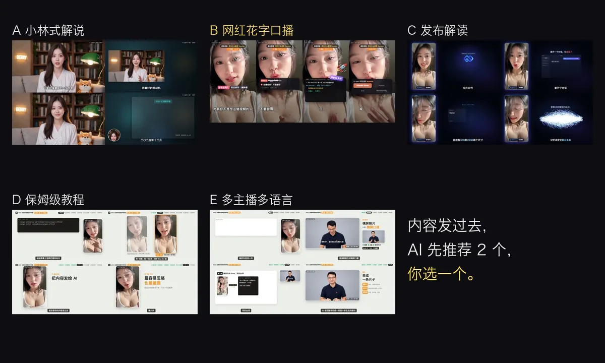
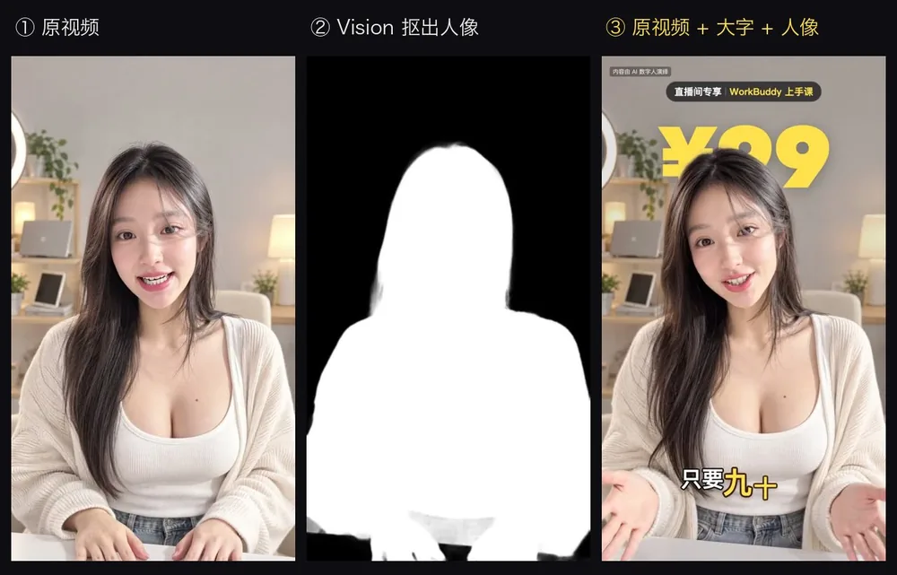
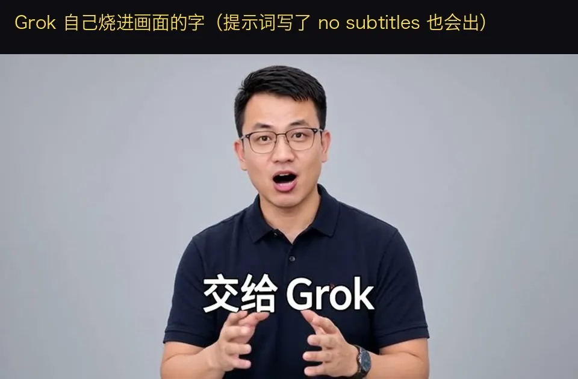
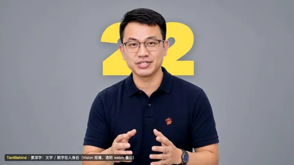
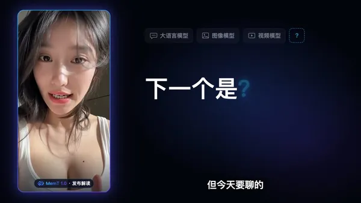
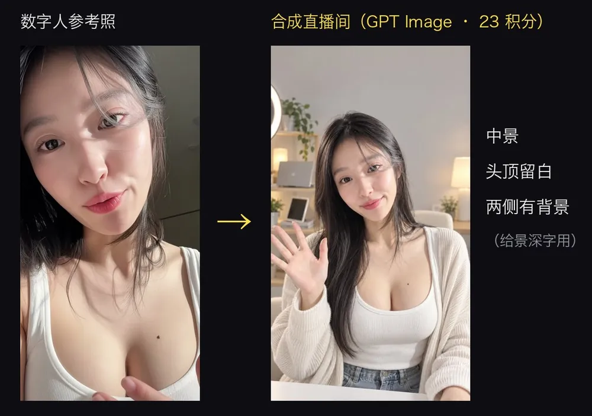
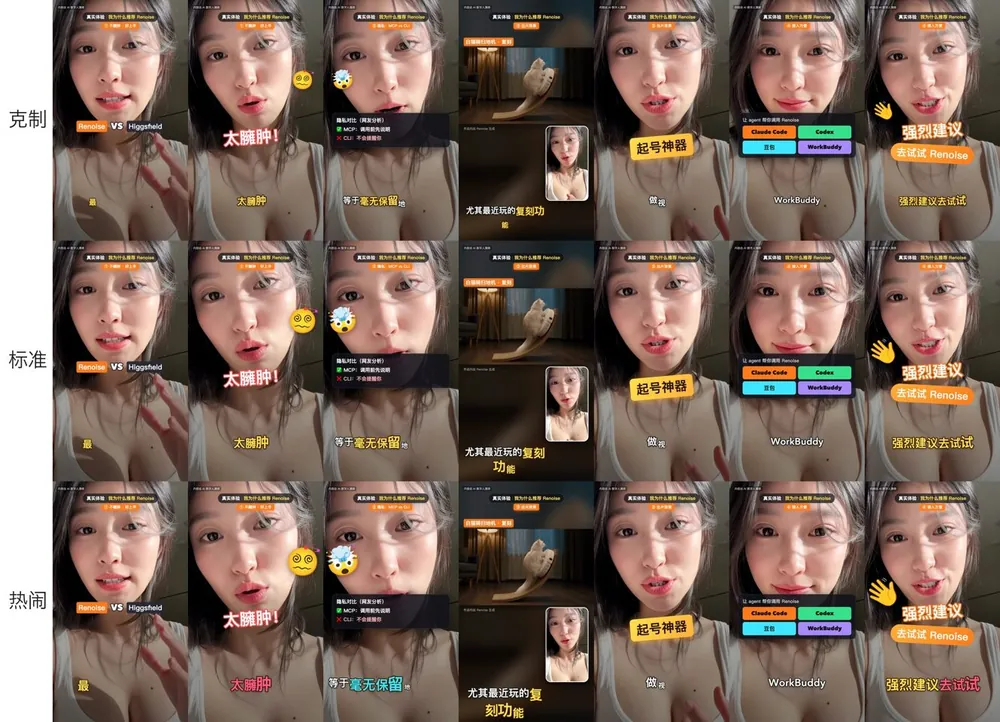
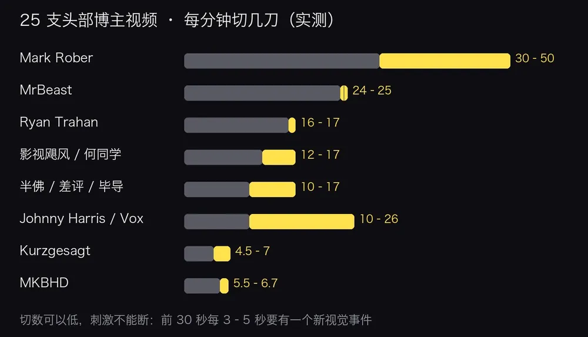
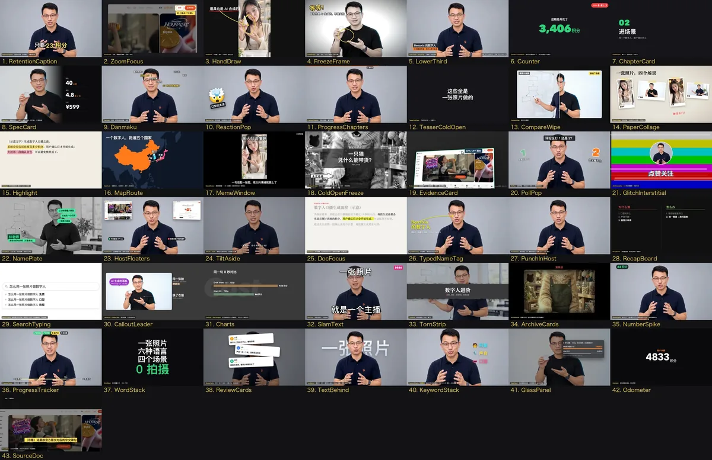

数据通过公开 GitHub API 获取，时间 2026-10-27 12:15（UTC+8）。仓库建于 2026-10-26 12:34（UTC+8），最后推送 2026-10-26 19:52（UTC+8），最新提交 5fa9b19。（10-28 复核：★ 1,269 / 295 forks，代码未更新，见文末“2026-10-28 复核与增补”。）一天之内拿到八百多颗星，说明这类“Agent 一条龙做口播”的需求相当旺盛。
docs/images/cover.jpg（© Berryxia），本站压缩为 WebP。画面中的主播是作者自己的 AI 数字人；依仓库 NOTICE，人物形象仅作演示，请勿在自己的内容中使用。相关阅读：本站另有 AvatarScript 导读——同样是“让一个形象替你开口”，但走的是确定性渲染路线（插画头像 + 脚本 + 强制对齐，可复现）；本项目走的是生成式视频路线（云端模型直接生成会说话的真人感视频，再用 Agent 做后期）。两者正好互为对照。另见用 Remotion 做代码短片的 beamnxw 发布短片、kerazcity 动效手册，以及代码合成音效的 Openverse 音效。
它是什么
Digital Human Koubo（“口播”即对着镜头讲话的短视频）不是一个独立 App，而是一套写给 AI Agent 执行的流程：一个标准 SKILL.md（开放的 Agent Skills 格式）加上 Python / Shell 脚本和三套 Remotion 剪辑模板。Agent 读 SKILL.md，按步骤调用远程 MCP（生成视频）和本机命令（下载、质检、剪辑）。
仓库里实际有两个 Skill：
digital-human-koubo（主 Skill）：固定数字人形象、写稿切段、报价、生成、质检、修音、对齐、剪辑包装。finance-explainer：风格 A“小林式财经 / 科技解说”的引擎——选题打分、带出处的事实清单、拍表episode.json、主播全屏 ↔ 小窗的“放大缩小”、图表与文档标黄，示例有硅谷银行（SVB）和 AI 芯片两期。
输入：一张人物照片（或仓库自带的形象）+ 一段内容或一句需求。输出：横屏 16:9 或竖屏 9:16 的 MP4 成片（响度 -14 / -16 LUFS），以及中间产物 brief.json、script.json、逐字时间轴 tl.json、剪辑描述 edit.json 等。
它能做什么
- 固定形象。脸、服装、声音描述、提示词模板都写在
persona.json，每条片子都是同一个人；还可以有第二主播（用户本人）和“橘猫店长”“柴犬主播”等角色。要进直播间、门店、街景，先用 GPT Image 2.5 合成开场画面，再当参考图让人物开口。 - 先报价，再花钱。生成前 Agent 先报“段数 · 秒数 · 预估积分 · 余额”，用户确认才生成；先拍第 1 段确认音色，再批量。
- 两道质检。每段用 whisper 回听并与稿子比对；每段抽 4 帧看画面——Grok 偶尔会自己往画面里烧字幕，有就重拍。
- 声音统一。1/3 倍频程频谱匹配 + 去齿音 + 同一小房间混响 + 响度统一，让几十段分开生成的口播听起来像一次录完（作者实测齿音段间差 13.2 dB → 5.9 dB）。
- 5 种剪辑风格 + 48 个包装组件。作者逐帧拆了 25 支头部博主视频（MrBeast、MKBHD、影视飓风、何同学、Vox、Kurzgesagt、半佛仙人等），把开场钩子、数字钉子、证据截图、地图航线、弹幕、投票、章节卡等做成可按名字调用的 Remotion 组件。
- 景深字。大字放在背景和人之间：macOS Vision 人像分割 → 透明视频 → 三层合成。
- 多语言。英、日、韩、法、西、阿拉伯语实测，whisper 回听准确率 94–100%。

docs/images/five-styles.jpg，© Berryxia）。Agent 先诊断内容，推荐其中 2 种并附预览图，一次问完风格、比例时长、花字强度和主播。架构与工作流
你的内容 ─► 0 环境检查：Renoise MCP（get_account）/ ffmpeg / whisper（doctor.sh，已装则跳过）
1 诊断内容 → 推荐 2 种风格 → 一次问完 → brief.json
2 写稿 script.json（每段 ≤15 秒，中文约 5.4 字/秒，标 shot: full/pip/vlog/depth）
3 build_tasks.py 切段 + 报价 → 用户确认 → 先拍第 1 段 → 批量 create_tasks / wait_tasks
4 rangedl.py 分片下载（6 段 Range 并发 + 断点续传 + ffmpeg 解码校验）
5 assemble.py：whisper 回听比对、裁到说完后 0.25 秒、拼接、loudnorm；每段抽 4 帧
6 voicefx/unify.py 声音统一；align.py 出逐字时间轴 tl.json
7 Remotion 剪辑：new_edit.sh 起工程 → edit.json / pack 组件 → check_edit.py 预检
8 渲染 → 看过渡中间帧 → 响度 -14 / -16 LUFS → MP4分工很清楚：云端只负责“生成会说话的画面”（Renoise MCP 上的 Grok Video 1.5，也写了 Wan 3.0、OmniHuman 的用法）；本机负责一切可检查、可重做的后期；Agent负责按 SKILL.md 串起流程并在花钱前停下来问人。剪辑层是数据驱动的：组件写进 pack 数组，时间用“段:词”锚定（如 "3:积分"），由逐字时间轴换算成帧，9:16 自动适配。
docs/images/ad-breakdown.jpg，© Berryxia）。仓库结构
skills/digital-human-koubo/
SKILL.md Agent 照着执行的流程（红线、步骤、命令）
persona.json 主播形象、声音描述、提示词模板、动作库
references/ 风格菜单 · 包装组件参数 · 手法库 · 安装 · 25 支视频拆解报告
scripts/ build_tasks · rangedl · assemble · align · check_edit · cutout_video
voicefx/unify · doctor · new_edit · make_assets · personmask.swift
templates/huazi-916 9:16 花字口播（edit.json 驱动，三档花字强度）
templates/packaging 48 个组件 + 图鉴工程
templates/reference launch-169 · tutorial-169 · multihost-169
skills/finance-explainer/ 风格 A 引擎（episode.json 拍表、检索与对齐脚本）怎么用
- 准备 Agent。需要三样能力：能装 Agent Skills、能接远程 MCP、能在本机执行命令。Claude Code 是作者实测环境；Codex 预期可用；OpenClaw、WorkBuddy 等“应可用”。只能聊天 + MCP 的 Agent 可以写稿、报价、生成，剪辑交给能跑命令的 Agent。
- 安装 Skill。
git clone后把skills/digital-human-koubo与skills/finance-explainer复制到~/.claude/skills/（Codex 为~/.codex/skills/）。 - 接入 Renoise MCP。注册 Renoise 账号，添加远程 MCP
https://renoise.ai/api/public/mcp（浏览器登录授权，无需复制 API key），问 Agent“查一下我的 Renoise 余额”验证。 - 本机工具。ffmpeg、Python 3（numpy、Pillow）、Node.js 18+、whisper.cpp 与
ggml-medium-q5_0模型；bash scripts/doctor.sh一键检查。景深字需要 macOS。 - 用大白话下单。例如“用这个数字人做一条 30 秒直播间广告：WorkBuddy 上手课，10 节课 99 元，原价 999。”之后按报价确认 → 看第 1 段 → 批量 → 出片。
- 做自己的数字人（可选）。用本人或明确授权的正脸照片生成四视图，对比 Grok / Wan 选模型，上传参考图后把
material:<id>写进persona.json；仓库里的 material ID 属于作者账号，别人用不了。
作者给出的真实成本：27 秒直播间广告 482 积分；4 分 36 秒教程约 3,250 积分；5 分 55 秒升级版约 3,409 积分（Grok Video 1.5 720p 17 积分/秒、480p 10 积分/秒，以实时报价为准）。

docs/images/text-behind-layers.jpg，© Berryxia）：人像抠图来自 macOS Vision，只抠用到的那几秒。局限与注意事项
- 依赖付费云服务。核心的视频生成走 Renoise（按积分计费）；没有本地生成路线。README 中的 Renoise 链接都带推广追踪参数（utm），
SKILL.md还要求 Agent 原样给出带 utm 的注册链接——读者可自行判断其商业关联。 - 口型绑定生成的声音。Grok 的口型跟它自己生成的声音走；事后换成 MiMo 克隆声或别的声音，口型会差约 100 毫秒，全屏特写看得出。要用自己录音又要口型准，需换 OmniHuman 等音频驱动模型。
- 生成模型的不稳定性。Grok 横屏偶尔自己烧字幕、偶尔漏念语气词；whisper 会把中文数字写成阿拉伯数字导致“误判”；美国 CDN 并行下载会断——这些都要靠质检脚本兜底和重拍，重拍也要花积分。
- 平台限制。景深字依赖 Apple Vision，仅 macOS；Claude 桌面端 / 网页只有沙盒，无法完成本机剪辑。除 Claude Code 外，其他 Agent 多为“预期 / 应可用”，未逐一实测。
- 许可分层。MIT 只覆盖代码和文档；示例视频、主播形象图、风格预览和图鉴里的人物是作者的 AI 数字人，NOTICE 明确不得当成自己的作品上传、不得使用其形象。Remotion 对 3 人以上公司需购买授权；Noto 动态表情为 CC BY 4.0，需署名。
- 伦理红线。作者要求只用本人或明确授权的脸和声音、每条片子标注“内容由 AI 数字人演绎”、不编造价格与评价。“小林式”风格只学结构与剪辑语法，不得使用真实创作者的脸、声音和原话。数字人带货广告在各平台的标注规定需自行核对。

docs/images/burned-subtitles.jpg，© Berryxia）。2026-10-28 复核与增补
仓库现状
- 代码没有更新。最新提交仍是
5fa9b19（2026-10-26 17:03，UTC+8），与 10-27 收录时相同；最后两次提交只是把 Renoise 注册链接改成带 utm 追踪参数的版本。 - 热度：★ 1,269 / 295 forks（公开 GitHub API，2026-10-28 23:50 UTC+8；10-27 收录时 ★ 805 / 202）。
- 演示视频：Issue #1 曾报告 README 里 8 个演示 MP4 链接全部 404（10-26 14:50 UTC+8），现已关闭；
v1.0.0Release 已于 10-26 19:52（UTC+8）发布，8 个视频都在。本站依规则不下载视频，只用仓库自带的封面帧。 - 社区补丁：PR #3（未合并）把抽帧拼图脚本里写死的 macOS 字体路径改成跨平台查找。这说明部分辅助脚本默认只在作者的 Mac 上测过，Linux / Windows 用户可能踩到同类问题。⚠️ 推断
模型与付费依赖一览
前文说“依赖付费云服务”，这里把各环节具体用了什么列出来。价格单位是 Renoise 积分，来自 persona.json、references/new-avatar.md 与 finance-explainer/references/production.md（后者注明“2026-10-21 实测”）。积分和人民币 / 美元怎么换算，仓库里没写 ⚠️。
| 环节 | 用什么 | 在哪跑 / 是否付费 | 作者给的价格 |
|---|---|---|---|
| 会说话的数字人（主力） | Grok Video 1.5（参考图 + 提示词里写台词，自带配音和口型） | 云端 · Renoise 积分 | 720p 17/秒、480p 10/秒；15 秒一段 720p = 255 |
| 用自己的声音驱动口型 | Wan 3.0 参考模式（参考图 + 参考音频）；README 和教程模板还提到 OmniHuman | 云端 · Renoise 积分 | 480p 约 6/秒（720p 翻倍）；输出音频比画面晚 0.23 秒，需要补偏移 |
| 定妆照 / 四视图 / 场景开场画面 | GPT Image 2.5（主 Skill）；Seedream 5.0 Pro（finance-explainer） | 云端 · Renoise 积分 | GPT Image 2.5 2k 约 23；Seedream 约 6 |
| 空镜、梗、贴纸 | Wan 3.0 无声短片；grok-image 绿底贴纸后抠像 | 云端 · Renoise 积分 | 5 秒 30 / 10 秒 60；贴纸约 3 |
| 保留节奏、换成主播音色 | Seed Audio 1.0 re-voicing 等 | 云端 | 未给价格 ⚠️ |
| 声音克隆 / 音色设计（可选） | 小米 MiMo mimo-v2.5-tts-voiceclone / voicedesign | 云端 API · 自备密钥 | 未给价格 ⚠️ |
| 事实检索、图库（finance-explainer） | Exa / Tavily / Serper / Firecrawl；Unsplash / Pexels / Pixabay / Wikimedia | 云端 API · 自备密钥 | 未给价格；各家是否有免费额度要自己看 ⚠️ |
| 回听质检、逐字对齐 | whisper.cpp + ggml-medium-q5_0 | 本机 · 免费（MIT） | — |
| 景深字抠像 | Apple Vision 人像分割（personmask.swift） | 本机 · 仅 macOS | — |
| 剪辑与渲染 | Remotion 4 + ffmpeg | 本机 · Remotion 对 3 人以上公司要买授权 | — |
结论：所有“生成画面 / 声音”的环节都在云端付费，本机只做检查、对齐、剪辑。仓库没有本地视频生成方案。想把声音这一环换成本地，可以参考本站的 VoiceStudio；想要本地生成音视频，可以参考 MiniMax H3 本地部署（需要大显存，效果与本项目没有可比的公开测试 ⚠️）。
两条“开口”路线：G 与 W
finance-explainer 的制作手册把“让数字人说话”拆成两种方案，并给了作者的对比（⚠️ 作者自报，本站未测）：
| G：Grok Video 1.5 原生说话 | W：Wan 3.0 音频驱动 | |
|---|---|---|
| 输入 | 1 张参考图 + 提示词里写台词 | 参考图 + 这一拍的音频 |
| 口型 | 和它自己生成的声音天然一致；事后换声约差 100 毫秒 | 跟着你给的音频走；停顿时偶尔不闭嘴 |
| 表情 | 灵动：眨眼、挑眉、手势多 | 偏呆、变化少 |
| 单段时长 | ≤ 15 秒 | 2–30 秒 |
| 坑 | 每段音色略有差异；型号要写成中文读法，否则会念成英文 | 音画偏移 0.23 秒 |
作者推荐的组合是：全屏特写用 G 720p；画中画小窗用 G 480p 或 W，或者干脆用 3 段 10 秒的通用说话循环轮流播放，据称能省约 40% 口型费用 ⚠️。主 Skill 的 persona.json 里还写了“白背心数字人”之外的三个角色：用户本人（只准用在用户自己的片子里）、橘猫店长、柴犬新闻主播；多语言 whisper 回听准确率写的是英 / 日 / 法 / 西 100%、阿拉伯语 99%、韩语 94%（⚠️ 作者 2026-10 自测）。
细节上的小出入：README 说 OmniHuman 的写法“Skill 里有”，但本站在 SKILL.md 和 references/ 里只找到 Wan 3.0 的写法，OmniHuman 只出现在教程模板的台词和画面里。
finance-explainer：把“小Lin说式”解说写成流水线
docs/posters/xiaolin-style-explainer.jpg（© Berryxia），本站压缩为 WebP，未下载视频。上次只简单提了这个副 Skill。读完 SKILL.md 和 6 份参考文档后，可以确定它是整个仓库里流程最严的一部分：
- 先查事实再写稿。
research.py找线索、打开原文核对，写成facts.md：每条都是“事实 — 日期 — 来源 URL”；剧本里的数字必须能在清单里找到，查不到的标 ⚠ 且不进剧本，主播可以直接说“这个我没查到”。 - 剧本就是拍表。
episode.json每一拍写一段口播、一个主画面（主播全屏 / 侧边 / 小窗 / 下场，或图表、空镜）和若干叠加卡片，用[[cue]]标卡点。三种骨架：危机型、收购博弈型、悖论型。文案指标写得很具体：成片约 6 字/秒，每分钟 1–2 个设问、3–4 个带参照物的数字。 - 首选真人录音。
align_recording.py按停顿把长录音切开逐段转写，口误只留最后一遍，拍内长停顿压到 0.16 秒；MiMo 预设音色只是占位。这一点和主 Skill（默认用 Grok 原生配音）不同。 - 频道拆解有数据。
channel-teardown.md写的是 160 支视频的元数据、97 支字幕统计、6 支逐帧分类（⚠️ 作者自报，原始数据未随仓库提供）。 - 小问题：SKILL.md 里提到的
promo-video、ai-teardown两个 Skill 不在本仓库，大概是作者自己的其他工具 ⚠️ 推断。
合规与伦理：数字人的脸和声音
以下是本站补充的背景，不是法律意见；各平台、各地区的规则要以最新原文为准。
- 仓库自己的红线写得比较全：只用本人或明确同意的脸和声音；不冒充真人；“小林式”只学结构，不用真实创作者的脸、声音、布景和原话；生成前先报价。finance-explainer 还要求做“身份核查”：用户给的脸如果被说成某位真实创作者，或者只是把真人照片改了发型眼镜，就不用。
- 中国大陆的 AI 标识规则：《人工智能生成合成内容标识办法》自 2025-09-01 起施行，第十条要求用户发布 AI 生成合成内容时主动声明并标识；配套强制性国家标准 GB 45438—2025 规定，视频的显式标识文字要同时含“人工智能 / AI”和“生成 / 合成”，放在起始画面的边角，字高不低于画面短边的 5%，至少显示 2 秒（网信办原文）。
- ⚠️ 推断：主 Skill 的默认标注可能不够。
persona.json里写的标注是“内容由 AI 数字人演绎”，其中没有“生成 / 合成”字样；finance-explainer 用的角标“AI 生成数字人演示 · 非商用”则符合上述要素。在大陆平台发布时，建议把字样、位置、字号、时长都按 GB 45438 核一遍。 - 肖像与声音：《民法典》第 1019 条禁止“利用信息技术手段伪造”他人肖像，第 1023 条规定声音参照肖像权保护；《互联网信息服务深度合成管理规定》第十四条要求提供人脸、人声编辑功能的服务提示使用者告知被编辑的个人并取得单独同意。也就是说，拿别人的照片或声音做数字人，风险不只在平台规则。
- 仓库里的人物不能拿来用。NOTICE 写明：MIT 只覆盖代码和文档；白背心主播、作者本人的形象都只供演示。
persona.json里的material:ID 属于作者的 Renoise 账号，别人本来也调不了。 - 利益关联：README、THIRD_PARTY 与 SKILL.md 中的 Renoise 链接都带
utm_source=official，最后两次提交专门加上这个参数；SKILL.md 还要求 Agent 原样给出这条链接。演示片“产品推荐口播”的文件名是renoise-koubo-huazi。作者和 Renoise 有没有合作或分成，仓库里没有说明 ⚠️ 推断，读者可自行判断。
未核实与推断清单
- ⚠️ 成本（482 / ~3,250 / ~3,409 积分）、单价、语言准确率、齿音段间差 13.2 → 5.9 dB、“省约 40%”：都是作者自报，本站没有 Renoise 账号，也没有跑过生成。
- ⚠️ 成片效果：本站只看了仓库自带的封面帧和 GIF 静帧，没有看完整视频，无法评价口型和画质。
- ⚠️ 除 Claude Code 外的 Agent（Codex、OpenClaw、WorkBuddy 等）兼容性是作者写的“预期可用 / 应可用”。
- ⚠️ 推断：Renoise 的商业关联、
promo-video/ai-teardown的来源、部分脚本仅在 macOS 测过。
本站相关阅读
- AvatarScript：同样是“让形象替你开口”，但走可复现的确定性 rig 路线，正好和本项目对照。
- VoiceStudio：本地声音克隆和配音，可以替换本项目里的 MiMo / Seed Audio 环节（默认权重非商用 ⚠️）。
- 若泉绮羽：一张立绘自动绑定：从单张图出发的另一条数字人路线（二次元、实时驱动）。
- Grok Imagine《奥德赛》制作揭秘：先做好角色设定图和关键帧再让画面动，和本项目“四视图 → 参考图 → 开口”的做法同一个思路。
- Hypit、Huashu-motion、vibe-knowledge-film：同样是让 Agent 按 Skill 出视频，分别侧重克隆爆款结构、商业发布片和知识短片。
- MiniMax H3 本地部署、H3 Director 工作流：本地或 ComfyUI 生成音视频的路线。
- 怎么让 AI 说人话：口播稿写得像真人说话，和 finance-explainer 的“活人感手法”可以对照着读。
小结
这个仓库的价值不在某个新模型，而在把一整条短视频生产线写成了 Agent 能照做的 SOP：花钱前停下来问人、每一段都有机器质检、声音和画面的“缝”都有脚本去缝、包装手法被拆成可调用的组件。与 AvatarScript 那种从头像 rig 出发、强调可复现的路线相比，它更贴近当下内容创作者的实际需求——真人感、快、可商用——代价是依赖付费云模型和更多的重拍成本。
附录：中文 README 逐字镜像
以下为仓库 README.zh-CN.md（提交 5fa9b19）的逐字镜像，依 MIT 许可转载。仅做了两处技术处理：原文中的 GIF 预览替换为仓库自带的静态封面帧（docs/posters/，点击仍跳转原视频），图片转为 WebP 托管在本站；仓库内相对链接改为指向 GitHub 原文件。标题层级为适配本页而下调。
Digital Human Koubo · AI 数字人口播
一张照片 + 一句话 → 一条带数字人出镜的口播成片。 写稿、对口型的 AI 主播、修音、字幕、头部博主级包装，全部交给你的 AI Agent 自动完成。
English · 简体中文

这条 27 秒的直播间广告里，主播不存在。脸、声音、直播间、花字、价格动画，全是 AI 做的。 输入只有一句话：「用这个数字人做一条 30 秒直播间广告，卖 WorkBuddy 上手课，10 节课 99 元，原价 999。」 总共花了 482 Renoise 积分。
示例
点 GIF 或「播放」看完整视频。下面每一条都是用这个仓库做出来的。
 |
||
| 直播间带货广告 · 9:16 · 27 秒 风格 B + 景深价格 ¥999→¥99 ▶ 播放 |
产品推荐口播 · 9:16 · 89 秒 花字、动态表情、画中画 ▶ 播放 |
文字在人身后（景深字） · 5 秒 Vision 人像抠图，三层合成 ▶ 播放 |
| 保姆级教程 · 16:9 · 4 分 36 秒 数字人亲自讲「我是怎么被做出来的」（风格 D） ▶ 播放 |
数字人升级版 · 16:9 · 5 分 55 秒 两位主播、六种语言、四个场景、猫狗角色（风格 E） ▶ 播放 |
 |
|
| 发布解读 · 16:9 · 39 秒 主播在侧边，右侧代码动效（风格 C） ▶ 播放 |
财经 / 科技解说 · 16:9 · 2 分 21 秒 图表、文件标黄、章节卡（风格 A） ▶ 播放 |
包装组件图鉴 · 48 个组件 · 2 分 40 秒 · ▶ 播放
示例里的主播全部是 AI 数字人，每条片子都标了「内容由 AI 数字人演绎」。男主播是作者用本人照片做的数字分身。
能做什么
- 一张照片做出固定的数字人：脸、服装、声音描述、提示词模板都存在
persona.json，每条片子都是同一个人。想进什么场景（直播间、门店、教室、京都街头），先用 GPT Image 合成开场画面，再让她开口。 - 对口型的口播片段：稿子切成 ≤ 15 秒一段，通过 Renoise MCP 用 Grok Video 1.5 生成。也写了 Wan 3.0、OmniHuman（用你自己的录音驱动口型）的用法。
- 先报价，再花钱：每次生成前，Agent 先报「段数 · 秒数 · 积分 · 余额」，你点头才开始；先拍第 1 段给你看，满意再批量。
- 两道质检：每段用 whisper 回听、和稿子比对；每段抽 4 帧检查（Grok 偶尔会自己往画面里烧字幕，有就重拍那段）。
- 声音统一：1/3 倍频程频谱匹配 + 去齿音 + 同一个小房间混响 + 响度统一，30 段分开生成的口播听起来像一次录完（实测齿音段间差 13.2 dB → 5.9 dB）。
- 按内容推荐剪辑风格：Agent 先诊断内容，推荐 2 种风格并附预览图，一次问完（风格 · 比例时长 · 花字强度 · 主播）。
- 48 个包装组件：逐帧拆了 25 支头部博主视频（MrBeast、Mark Rober、Ryan Trahan、MKBHD、影视飓风、何同学、Johnny Harris、Vox、Kurzgesagt、回形针、半佛仙人、差评、毕导）。每种风格自带默认包装，想加减直接说。
- 景深字：大字 / 数字放在背景和人之间（macOS Vision 人像分割 → 透明视频 → 三层合成）。
- 多语言：英、日、韩、法、西、阿拉伯语实测，whisper 回听准确率 94–100%。
- 多种 Agent 都能用：标准
SKILL.mdAgent Skill + 脚本，只要能装 Skill、能接远程 MCP、能在本机跑命令，就能驱动整条流程。
工作流程
你的内容 ──► 0. 环境检查（Renoise MCP / ffmpeg / whisper，已经有的直接跳过）
1. 诊断内容 → 5 种风格里推荐 2 种 → 一次问完 → brief.json
2. 写稿 script.json（每段 ≤15 秒，中文约 5.4 字/秒）
3. 报价 → 等你确认 → 先拍第 1 段 → 你看过 → 批量
4. 分片下载（防 CDN 截断）→ whisper 回听 → 抽帧检查
5. 声音统一（频谱匹配 + 去齿音 + 同一房间混响）
6. 逐字时间轴（tl.json）
7. Remotion 剪辑：风格模板 + 默认包装（+ 你点名的手法）
8. 渲染 → 看过渡中间帧 → 响度（-14 / -16 LUFS）
支持哪些 Agent
这个 Skill 是一个带 SKILL.md（开放的 Agent Skills 格式）的文件夹，加上 Python / Shell / Remotion 脚本。要跑通完整流程，Agent 需要三样能力：
- 能装 Agent Skills（技能目录或上传技能包）；
- 能接远程 MCP 服务器（Renoise：Streamable HTTP，浏览器登录授权，不用复制 API key）；
- 能在你电脑上执行命令（ffmpeg、Python、Node，用来下载、质检、剪辑）。
| Agent | 装 Skill | 接 Renoise MCP | 本机执行命令 | 状态 |
|---|---|---|---|---|
| Claude Code | ~/.claude/skills/ |
/plugin（见下文） |
✅ | ✅ 已实测，这个仓库就是用它做的 |
| Codex（CLI / 桌面） | ~/.codex/skills/ |
codex mcp add |
✅ | ✅ 预期可用（同一套脚本） |
| OpenClaw | 放进 OpenClaw 的技能目录（见其文档） | openclaw plugins install |
✅ | ⚙️ 应可用 |
| WorkBuddy | 技能 → 导入文件夹 / 压缩包 | 连接器 → 添加自定义 MCP | ✅ 桌面端 Agent | ⚙️ 应可用，菜单名以 App 当前版本为准 |
| 豆包 · 千问办公 · 纳米Work 等 Agent 产品 | 产品支持 Agent Skills 就导入 | 支持自定义 / 远程 MCP 就添加 | 剪辑需要 | ⚙️ 满足上面三样能力即可，具体入口以各产品文档为准 |
| Claude 桌面端 / claude.ai | 设置里上传技能包 | 连接器 → Add custom connector | ⚠️ 只有沙盒 | 写稿、设计场景、报价、生成都能做；本机剪辑需要能跑命令的 Agent |
如果你的 Agent 只能「MCP + 聊天」、不能跑本机命令，也可以先用它写稿、报价、生成片段；剪辑这几步再交给 Claude Code / Codex，或者照
SKILL.md里的命令手动跑。
安装
1 · 下载代码
git clone https://github.com/andyhuo520/digital-human-koubo.git
cd digital-human-koubo
2 · 把两个 Skill 装进你的 Agent
仓库里有两个 Skill：digital-human-koubo（主 Skill）和 finance-explainer（风格 A「财经 / 科技解说」的引擎）。
Claude Code
mkdir -p ~/.claude/skills && cp -R skills/digital-human-koubo skills/finance-explainer ~/.claude/skills/
Codex
mkdir -p ~/.codex/skills && cp -R skills/digital-human-koubo skills/finance-explainer ~/.codex/skills/
WorkBuddy / OpenClaw / 其他 Agent：把两个文件夹打成压缩包，在产品的「技能」页面导入，或者复制进它的技能目录（以产品文档为准）：
cd skills && zip -r ../digital-human-skills.zip digital-human-koubo finance-explainer && cd ..
3 · 接入 Renoise MCP（AI 视频 / 图片生成）
先去 renoise.ai 注册账号。登录都在浏览器里完成，不用复制任何 API key。
| Agent | 怎么接 |
|---|---|
| Claude Code | /plugin marketplace add ArcoCodes/renoise-plugins-official，再 /plugin install renoise@renoise-plugins-official |
| Codex | codex mcp add renoise --url https://renoise.ai/api/public/mcp，再 codex mcp login renoise |
| OpenClaw | openclaw plugins install renoise --marketplace ArcoCodes/renoise-plugins-official |
| Claude 桌面端 / claude.ai | 设置 → 连接器 → Add custom connector → 名称 Renoise，地址 https://renoise.ai/api/public/mcp |
| WorkBuddy、Cursor、Windsurf、Cline、豆包、千问、纳米Work…… | 添加远程 MCP 服务器，地址 https://renoise.ai/api/public/mcp（常见配置：{"mcpServers":{"renoise":{"url":"https://renoise.ai/api/public/mcp"}}}） |
官方最新装法：renoise.ai/plugin。装好后问 Agent 一句「查一下我的 Renoise 余额」，能查到就连上了。
4 · 本机工具（下载、质检、剪辑要用）
| 工具 | macOS | Windows | Linux |
|---|---|---|---|
| ffmpeg | brew install ffmpeg |
winget install Gyan.FFmpeg |
sudo apt install ffmpeg |
| Python 3 + numpy + Pillow | brew install python 后 python3 -m pip install numpy pillow |
winget install Python.Python.3.12 |
sudo apt install python3-pip |
| Node.js 18+（Remotion） | brew install node |
winget install OpenJS.NodeJS.LTS |
nvm install --lts |
whisper.cpp（whisper-cli） |
brew install whisper-cpp |
Releases 下载 | 源码编译 |
| whisper 模型 | 下载 ggml-medium-q5_0.bin 放到 ~/models/（或 export WHISPER_MODEL=模型路径） |
同左 | 同左 |
一条命令检查：已经装好的打勾跳过，缺什么列出多种装法：
bash ~/.claude/skills/digital-human-koubo/scripts/doctor.sh
景深字（文字在人身后）用的是 Apple Vision，需要 macOS；其余功能跨平台。
5 · 音效与占位配乐
仓库不带任何第三方音频。用代码合成一套原创音效（30 个）和一条占位配乐（无版权）：
python3 ~/.claude/skills/digital-human-koubo/scripts/make_assets.py
new_edit.sh 每次起新工程也会自动跑。想要更好的配乐，把你有授权的曲子放到 <工程>/public/music/bgm.mp3 覆盖即可。
6 ·（可选）小米 MiMo 语音：音色设计 / 声音克隆
默认用 Grok 自带的声音（口型最准）。想要设计一个新音色、用你自己的克隆声音，或者做纯旁白视频，Skill 会调用 小米 MiMo TTS：
- 去 platform.xiaomimimo.com 注册并创建 API Key。写这份文档时小米的 TTS 模型是限时免费的，具体以官网当前价格为准。
- 把 Key 放进环境变量，或写到
~/.config/ai-teardown/mimo.env：bash mkdir -p ~/.config/ai-teardown && cat > ~/.config/ai-teardown/mimo.env <<'EOF' MIMO_API_KEY=你的key MIMO_BASE_URL=https://api.xiaomimimo.com/v1 EOF chmod 600 ~/.config/ai-teardown/mimo.env - 只克隆你本人的声音，或明确授权给你的声音。
注意：Grok 的口型跟的是它自己生成的声音。事后换成别的声音，口型会差约 100 毫秒（画中画看不出，全屏特写看得出）。想用自己的录音又要口型准，换「音频驱动口型」的模型，比如 OmniHuman（Skill 里有写法）。
快速开始
直接用大白话跟 Agent 说：
用我的数字人 Skill 讲这段：……（粘贴你的内容）
用这个数字人做一条 30 秒直播间广告：WorkBuddy 上手课，10 节课 99 元，原价 999。
做一条 3 分钟的小林式解说：硅谷银行为什么会暴雷。
讲到这几个国家的时候加地图航线 / 把「¥99」放在她身后 / 开场加个预告闪回。
把包装组件图鉴发我看看
接下来会发生： 1. 环境检查：已经装好的直接跳过。 2. 一行诊断 + 推荐 2 种风格（附预览图），一次问完。 3. 稿子 + 场景设计 + 积分报价 → 你确认 → 先拍第 1 段 → 你确认 → 批量。 4. 质检、修音，按风格默认包装剪辑 → 出成片 MP4。
做你自己的数字人
- 选一张照片：正脸、光线均匀、头发不挡脸、嘴闭着。只用你本人或明确授权的照片。
- 让 Agent 生成四视图（正面、两个侧面、背面）：GPT Image 2.5，2k，约 23 积分，保证换角度不变脸。
- 同一张图、同一句台词做多模型对比（Grok Video 1.5 vs Wan 3.0，各 8 秒），选一个。
- 把参考图上传到 Renoise，把
material:<id>写进skills/digital-human-koubo/persona.json（renoise.reference_material；第二位主播写在other_hosts.me）。
详细步骤见 references/new-avatar.md。仓库里的 material: ID 属于作者的账号，你的账号用不了，这是正常的。

五种剪辑风格
| 风格 | 比例 | 时长 | 适合 | 模板 |
|---|---|---|---|---|
| A 小林式解说（财经 / 科技事件） | 16:9 | 3–20 分钟 | 事件、数据、「为什么」 | finance-explainer 引擎 |
| B 网红花字口播 | 9:16 | 30–120 秒 | 安利、带货、种草、吐槽 | templates/huazi-916（数据驱动） |
| C 发布解读 | 16:9 | 30–90 秒 | 新品、新模型发布 | templates/reference/launch-169 |
| D 保姆级教程 | 16:9 | 3–8 分钟 | 几步做出 XX、工具上手 | templates/reference/tutorial-169 |
| E 多主播 · 多语言 · 多场景 | 16:9 | 3–7 分钟 | 能力展示、出海 | templates/reference/multihost-169 |
风格 B 有三档花字强度：克制 / 标准 / 热闹。

风格 A 只学解说频道的结构和剪辑语法，不用真实创作者的脸、声音、布景和原话。
48 个包装组件
逐帧拆了 25 支视频（镜头切分、开场逐拍、屏幕文字、声音），完整报告在 references/research/。

从研究里提炼的规则（packaging-playbook.md）：
- 切数可以低，刺激不能断：前 30 秒每 3–5 秒要有一个新东西出现。
- 前 3 秒直接给命题或动作，不问好、不放 Logo。
- BGM 从头铺到尾；音效只给事件（中文口播头部每分钟 1–3 个）；揭晓前刻意静音 0.6–1.0 秒。
- 单机位数字人最便宜的节奏来源：按句子边界跳切推近（1.0× / 1.18× / 1.32×）。

| 分组 | 组件 |
|---|---|
| 开场 / 钩子 | TeaserColdOpen 预告闪回 · ColdOpenFreeze 定格片名卡 · SearchTyping 搜索框打字 · NumberSpike 数字钉子 · SlamText 砸字 · WordStack 逐词堆叠 · TornStrip 撕纸标题 · TextBehind 景深字 |
| 证据 / 数据 | EvidenceCard 证据截图 · DocFocus 文档聚焦 · SourceDoc 官方文档 · ZoomFocus 截图聚焦 · Counter 数字滚动 · Odometer 里程表 · GlassPanel 玻璃面板 · SpecCard 参数卡 · LineDraw 折线图 · BarCompare 对比条 · ReviewCards 评论卡 · ArchiveCards 档案卡 · MapRoute 地图航线 · CompareWipe 前后对比 · PaperCollage 纸张拼贴 |
| 标注 / 人物 | HandDraw 手绘圈注 · CalloutPill 指针胶囊 · LeaderLabel 引线标注 · TypedNameTag 打字名牌 · LowerThird 人名条 · NamePlate 名牌语录 · SourceTag 出处角标 · FreezeFrame 定格「等等！」 |
| 节奏 / 互动 | PunchInHost 跳切推近 · KeywordStack 关键词三连 · RetentionCaption 留存大字幕 · TiltLine 倾斜金句 · Aside 括号旁白 · Danmaku 弹幕 · ReactionPop 反应贴纸 · MemeWindow 梗图窗 · PollPop 投票 · GlitchInterstitial 故障插屏 · HostFloaters 悬浮窗 · ProgressChapters 进度条 · ProgressTracker 步骤追踪 · ChapterCard 章节卡 · RecapBoard 复盘板 · Countdown 倒计时 · GhostWord 鬼影大字 |
每个组件都在 pack 列表里按名字调用，时间写成「段:词」（如 "3:积分"），9:16 自动适配：
"pack": [
{ "use": "NumberSpike", "at": "1:不到十块钱", "until": "1:end", "text": "¥9.9/节", "label": "一节课" },
{ "use": "Danmaku", "items": [{ "t": "真的假的？", "at": "1:" }, { "t": "AI 还能帮我干活？", "at": "1:教你", "hot": true }] },
{ "use": "TextBehind", "src": "main.mp4", "cutout": "main_cut_s4.webm", "cutoutFrom": 17.2, "at": "4:", "until": "4:end",
"mode": "count", "lines": [{ "t": "¥99", "font": "en", "color": "#FFE14D", "size": 0.17 }], "count": { "from": 999, "to": 99, "prefix": "¥" } }
]
参数说明：references/packaging.md。渲染前先检查：python3 scripts/check_edit.py <工程>/src。
景深字：文字在人身后
python3 scripts/cutout_video.py public/main.mp4 public/main_cut_s4.webm --from 17.2 --to 22.4 # 只抠用到的那几秒
适合中景、头顶留白的画面。自拍特写里人占了约 89% 的画面，字会被挡住，脚本在超过 60% 时会提醒。把这类段落标成 "shot": "depth"，生成时就会出中景。
成本参考（真实跑过的数）
| 视频 | 生成内容 | 积分 |
|---|---|---|
| 直播间广告 9:16 27 秒 | 1 张场景图 + 5 段 Grok 口播（720p） | 482 |
| 教程第二期 16:9 4 分 36 秒 | 32 段口播（全屏 720p / 画中画 480p）+ 演示素材 | 约 3250 |
| 数字人升级版 16:9 5 分 55 秒 | 30 段新片段 + 7 张场景图，复用 17 段 | 约 3409 |
写文档时的价格：Grok Video 1.5 720p 17 积分/秒、480p 10 积分/秒；GPT Image 2.5 2k 23 积分/张。以 Agent 实时报价为准。
目录结构
skills/
digital-human-koubo/ 主 Skill
SKILL.md Agent 照着执行的流程
persona.json 主播形象、声音描述、提示词模板
references/ 风格菜单 · 包装组件 · 手法库 · 安装 · 拆解报告
scripts/ build_tasks · rangedl · assemble · align · check_edit · cutout_video
voicefx/unify · doctor · new_edit · make_assets
templates/
huazi-916/ 9:16 数据驱动花字口播模板（edit.json）
packaging/ 48 个组件 + 图鉴工程
reference/ launch-169 · tutorial-169 · multihost-169
assets/ 风格预览图 · 包装图鉴 · 数字人参考图
finance-explainer/ 风格 A 引擎（episode.json 拍表、检索工具）
docs/ README 用的图片、GIF 预览、封面帧
踩过的坑（Skill 里都处理了）
- Grok 横屏口播偶尔自己烧字幕，提示词写了也挡不住 → 抽帧检查，重拍那段。
- whisper 会把中文数字写成阿拉伯数字（九百九十九 → 999），准确率会掉，但其实没念错 → 先听再决定重拍。
- Renoise 美国 CDN 并行下载会断成半截 →
rangedl.py6 段 Range 续传 + 解码校验。 - Grok 9:16 720p 是 720×1280，别拉成别的比例。
- expo 缓动到不了终点（99.9 四舍五入成 100）→ 计数动画结束时强制落在精确值。
- 主播视频轨一定要静音；两条声音差几毫秒叠在一起会刺耳（梳状滤波）。
使用红线
- 只用你本人或明确授权的脸和声音，不冒充任何真人或创作者。
- 每条片子标「内容由 AI 数字人演绎」，场景和动物片段标「AI 生成」。
- 不编数字、价格、优惠、评价；画面上的示意数据要标「示意」。
- 不用网络梗图、影视剧截图、明星照片；梗图类组件用你自己数字人生成的原创贴纸。
- 积分只在你确认报价之后才花。
许可与第三方
- 代码和文档：MIT © 2026 Berryxia（andyhuo520）。
- 渲染用的 Remotion 有自己的许可：个人和 3 人以内的公司免费，更大的公司需要购买公司授权。
- 动态表情：Google Noto Emoji Animation（CC BY 4.0），视频里请署名「Animated emoji: Google Noto」。
- 地图：world-atlas（ISC，数据来自 Natural Earth，公有领域）、d3-geo、topojson-client（ISC）。涉及中国边界的正式发布内容，请按国内相关规范另行核对。
- 语音识别：whisper.cpp（MIT）。生成走 Renoise（用你自己的账号和积分）；可选 TTS 用 小米 MiMo。
- WorkBuddy 示例里的课程截图来自作者自己的课程。示例视频是作者的作品，请不要当成自己的作品二次上传。
详见 THIRD_PARTY.md。
作者 Berryxia · 用 Claude Code 做的 · 有帮助的话点个 ⭐，让更多人看到。
附录：MIT 许可原文
展开 LICENSE
MIT License
Copyright (c) 2026 Berryxia (andyhuo520)
Permission is hereby granted, free of charge, to any person obtaining a copy
of this software and associated documentation files (the "Software"), to deal
in the Software without restriction, including without limitation the rights
to use, copy, modify, merge, publish, distribute, sublicense, and/or sell
copies of the Software, and to permit persons to whom the Software is
furnished to do so, subject to the following conditions:
The above copyright notice and this permission notice shall be included in all
copies or substantial portions of the Software.
THE SOFTWARE IS PROVIDED "AS IS", WITHOUT WARRANTY OF ANY KIND, EXPRESS OR
IMPLIED, INCLUDING BUT NOT LIMITED TO THE WARRANTIES OF MERCHANTABILITY,
FITNESS FOR A PARTICULAR PURPOSE AND NONINFRINGEMENT. IN NO EVENT SHALL THE
AUTHORS OR COPYRIGHT HOLDERS BE LIABLE FOR ANY CLAIM, DAMAGES OR OTHER
LIABILITY, WHETHER IN AN ACTION OF CONTRACT, TORT OR OTHERWISE, ARISING FROM,
OUT OF OR IN CONNECTION WITH THE SOFTWARE OR THE USE OR OTHER DEALINGS IN THE
SOFTWARE.